11Installing, updating, going backFirmware tools and recovery
12The browser simulatorPractise without the FM-1
13Specifications and limits
AMIDI implementation chart
BTroubleshooting
All product names are trademarks of their owners and are used only to identify compatible devices. OrGigs is not affiliated with them.
1Welcome
OrGigs turns the M-VAVE FM-1 into a complete drawbar organ: nine drawbars for each of two manuals and four pedal stops, on sixteen models from tonewheel and 1960s combo organs to four historical pipe organs and French musette and tango bandoneon reeds. It plays on three manuals, and it works as a MIDI router between your keyboards and your synths.
Highlights
Three manuals with independent registrations: Upper (9 drawbars), Lower (9 drawbars) and Pedal (4 stops).
84 free-running tone generators from C1 to B7. Every key gets its own sound, and no note is ever cut off to make room for another (no voice stealing).
Sixteen instrument models in three departments: eight vintage and combo organs, four pipe organs from four centuries (each with its own stops and tuning), and four accordions.
Effects per manual, like a mixer: each manual has its own tube drive, scanner vibrato and chorus or tremulant, its own rotary switch and its own sends to a shared stereo ping-pong delay and four reverbs up to a 7.5-second cathedral. Tonewheel percussion and a two-rotor rotary with real inertia. An insert effect slot with chorus, wah-wah, auto-wah, flanger, phaser, ring modulator and amp, and a master EQ and compressor.
One list of drawbar registrations: 36 classic tonewheel registrations, pipe and free-reed registrations, a pedal list, and 16 user slots. 16 performance setups store the whole instrument, one on each white key.
A MIDI mixer: 16 channel volumes (CC 7), kept with each setup.
Panel lights for dark stages: all keys and buttons can glow dimly, or light fully.
Three MIDI Zones, one per manual: each takes its own MIDI channel and key range, plays its manual, and sends the notes on (with their velocity) to your synths, transposed, cloned to more channels, spread over nine harmonic channels or turned into chords.
How to read this manual
Panel buttons and encoders are written like FX or PRESETS. Text that appears on the FM-1's screen is written like ROTARY FAST. SEL + KNOB 3 means: hold SEL and turn KNOB 3.
About SEL. The FM-1's four knobs can't be pushed. OrGigs uses a held SEL button as the "push" instead, so every knob has a second function.
The full version. OrGigs is at heart a firmware for the M-VAVE SMK-37 Elite: its main features were designed there, and this FM-1 version is a compact edition of it. The Elite version has the same organ and effects and more around them: your own rotary cabinets, a mixer with pan, sends, mute and solo, an expression pedal, and five pad layouts. If you have an Elite, check it out. Both read each other's backups (chapter 8).
2Quick start
Five steps from power-on to a full organ sound.
Power on. OrGigs starts as you left it. On a new install that is performance setup 1, a tonewheel jazz sound with percussion and chorus.
Play. The 27 keys cover F3 to G5. Use OCT− and OCT+ to move the keyboard down two or up three octaves. Set the volume with the MASTER knob.
Try the 16 factory setups. Hold SEL: the 16 white keys (F3 to G5) light up. Press one of them: 1 tonewheel jazz, 2 cathedral, 3 Paris musette, 4 Brit Combo, 5 tonewheel rock, 6 Italo Combo, 7 baroque organ, 8 tango bandoneon, 9 British hard rock, 10 gospel, 11 baroque rock ballad, 12 60s transistor combo, 13 reggae, 14 cathedral trumpet, 15 musette master, 16 psychedelic space pad.
Pull the drawbars.ENV, then KNOB 1–KNOB 4 move drawbars 1–4; LFO gives drawbars 5–8, EDIT drawbar 9. Or turn PRESETS for ready-made registrations, from the classic jazz lead to the Mixtur.
Speed up the rotary. Press REC to switch the rotary speaker between slow and fast, and listen to it ramp up. PLAY brakes it to a stop.
To try another instrument, turn ALGORITHM (models 1–16). To keep what you've built, hold SAVE and press one of the 16 white keys: the whole instrument is stored in that performance setup.
3The panel
Every control of the FM-1 and what OrGigs does with it.
Three rules that hold on every screen
Encoder
Always does
SELECT
Chooses the manual (and its MIDI zone): UPPER, LOWER, PEDAL
ALGORITHM
Chooses the instrument model 1–16
PRESETS
Turns through the drawbar list of that manual (chapter 8)
The buttons
The twelve buttons beside the screen sit in two rows of six. The FX, mixer, lights and MIDI screens draw the same two rows at their bottom edge, so you can see what each button does there.
1
2
3
4
5
6
Top row
FX
SEL
ENV
LFO
EDIT
GLO
Bottom row
HOME
SAVE
ARP
SEQ
PLAY
REC
Control
Function
With SEL held
KNOB 1–KNOB 4
The four parameters of the screen
The second row of the screen
MASTER
Output volume
—
ENV
Drawbars 1–4. FX: the upper manual's row. INSERT: the effect on the upper manual. MASTER: the EQ on and off. Mixer: row 1. In the MIDI Zones: a switch of the screen
In the MIDI Zones: a second switch
LFO
Drawbars 5–8. FX: the lower manual's row. INSERT: the effect on the lower manual. MASTER: the compressor on and off. Mixer: row 2. In the MIDI Zones: a switch
Ditto
EDIT
Drawbars 1, 3, 4 and 9 (drawbar 9 on KNOB 4). INSERT: the next effect. MASTER: the knobs hold the EQ or the compressor. In the MIDI Zones: a switch
INSERT: the effect before. Otherwise ditto
FX
The FX screen. Press again: back to the drawbars
The insert effect (INSERT); press again: the master (MASTER)
GLO
The MIDI Zones. Press again: the next of their five screens
The panel lights (chapter 4)
HOME
On the drawbars: the MIDI mixer; press again: back. Everywhere else: back to the drawbars
Panic: all notes off, inside and on all 16 MIDI channels
SAVE
Tap: store the drawbars of the manual into a user slot of the drawbar list. Hold + one of the 16 white keys: store the whole instrument into that performance setup
—
SEL
Held: the 16 white keys recall the performance setups. Pressing it also shows the processor load and the battery, DSP 10% BAT 94%
—
ARP
Vibrato / chorus of the manual on and off (tremulant on pipe and reed models). FX: the pedal's row. INSERT: the effect on the pedal. Mixer: row 3. In the MIDI Zones: a switch
In the MIDI Zones: a second switch
SEQ
Coupler II/I on and off (the upper keys also play the lower registration). FX: the manual through the rotary or not. INSERT: the effect on and off. Mixer: row 4. In the MIDI Zones: a switch
Ditto
PLAY
Rotary brake
—
REC
Rotary slow ↔ fast
The manual through the rotary or not
OCT−OCT+
Octave of the FM-1's keys, −2 … +3
—
Keys
Play the organ. In the clone and harmonic screens they become switches (chapter 10)
The 16 white keys: performance setups
The button lights show what's active: the drawbar group (ENV/LFO/EDIT), the FX, mixer or MIDI screen (FX/HOME/GLO), vibrato (ARP), the coupler (SEQ), rotary brake (PLAY) and fast (REC), and a shifted octave (OCT−/OCT+). On the FX and mixer screens the row buttons glow and the chosen row is lit. In the MIDI Zones the five switch buttons light when their switch is on. For dark stages, the panel lights (chapter 4) let all keys and buttons glow.
Touch strips. The FM-1's two touch strips can't be read by this firmware. Their jobs (rotary speed, bellows, pitch bend or rotary kick) are available from any external controller as MIDI CC 1 and pitch bend; see chapter 10.
4The screens
The 240 × 240 display shows the drawbars, the FX, INSERT and MASTER screens, the MIDI mixer, the panel lights and the five screens of the MIDI Zones (the fifth: YST, the Yamaha SEQTRAK). At power-on the welcome screen lets the nine drawbars grow down before the OrGigs logo appears; any key or button skips it.
The drawbars
Top bar. Model number and short name (1 WHEEL), the manual (UPPER), the drawbar group the knobs hold (DB1-4, DB5-8, DB9), and on the right the drawbar preset (P1) and the battery. A star (P1*) means the drawbars have been moved since the preset was recalled.
Drawbars. The nine drawbars of the manual, 0–8. The colour shows the family. Vintage: brown sub-harmonics, white octaves, dark grey the in-between footages, as on a tonewheel organ. Pipe: gold principals, blue flutes, red strings and reeds. Reed: violet the detuned reeds, grey the air. The amber marks show the drawbars the four knobs move right now.
Mini-bars. The other two manuals, so you see the whole registration; II/I when the coupler is on, and the performance setup (S1). When you change something, its name and value cover this strip for about one and a half seconds, for example DRIVE 70.
Tabs. Three switches in the tonewheel-organ colours, lit when on. Green: vibrato/chorus (V1…C3), or the tremulant on pipe and reed models. Red: percussion on the tonewheel (2F = 2nd fast … 3S = 3rd slow), the coupler II/I on the other models. Yellow: the rotary of this manual: its speed (SLOW, FAST, BRK), or OFF when the manual goes past it.
Knobs, of this manual. Red: drive (DRV). Yellow: delay send (DLY). Green: reverb send, labelled with the room: SPRing, STG stage, HALl, CAThedral.
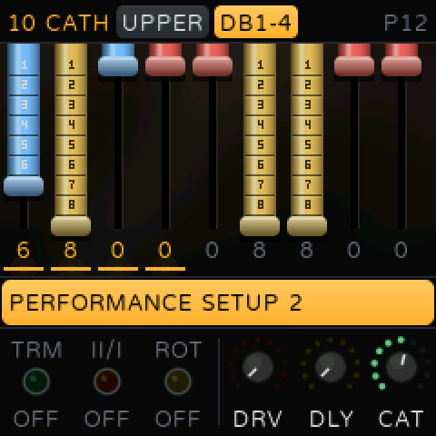
Cathedral organ, performance setup 2, just recalled
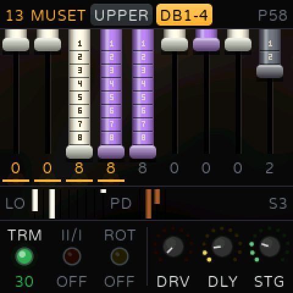
Paris musette: violet drawbars are the detuned reeds
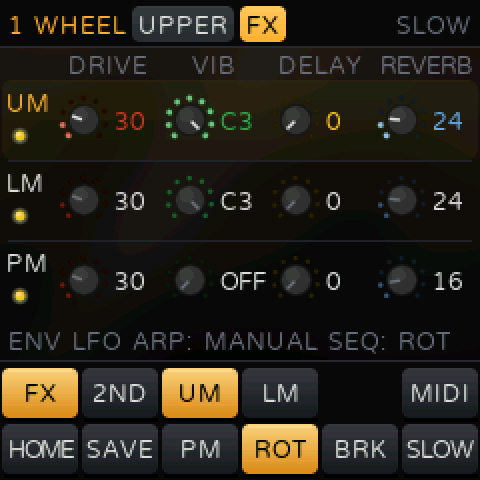
The FX screen (chapter 9)
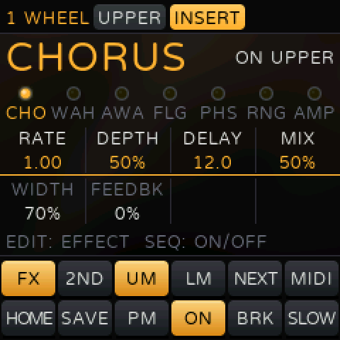
INSERT: the chorus on the upper manual (chapter 9)
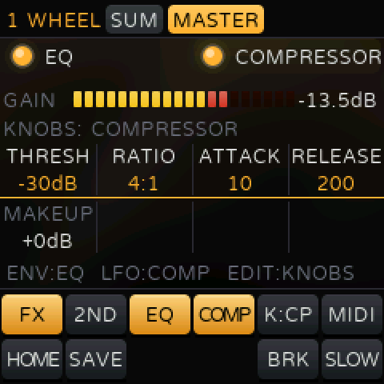
MASTER: EQ and compressor, 13.5 dB taken off (chapter 9)
The FX, mixer, lights and MIDI screens
These screens all share one layout, so the screen matches the panel:
Top bar: what you're editing, and the manual (zone).
Knob rows: four columns, one under each of KNOB 1–KNOB 4, in the same order as the knobs. On the FX screen there is a row per manual, on the mixer a row per four channels; the row the knobs move is lit. On the MIDI screens the second row shows what the knobs do while SEL is held.
Message line: the last change, or a hint.
Button map: the twelve buttons in two rows of six, as on the panel, labelled with what they do on this screen. A lit button is a switch that is on.
The battery shows at the right end of every top bar. Below 20 % it turns red; below 10 % the message line warns BATTERY LOW, again every five minutes. A yellow bolt in the symbol means it is charging: the FM-1 is on a computer or the SEQTRAK, and there is no low-battery warning then. A plain USB charger charges too, but shows no bolt (nothing there talks to the keyboard). Pressing SEL shows the charge (BAT 94%). On the cable it reads full (charging raises the voltage).
The MIDI screens add a picture above the knob row: the key ranges of the three zones, the channels of the cloner, the footages of the harmonic mapper, or the stored chord (chapter 10).
The MIDI mixer
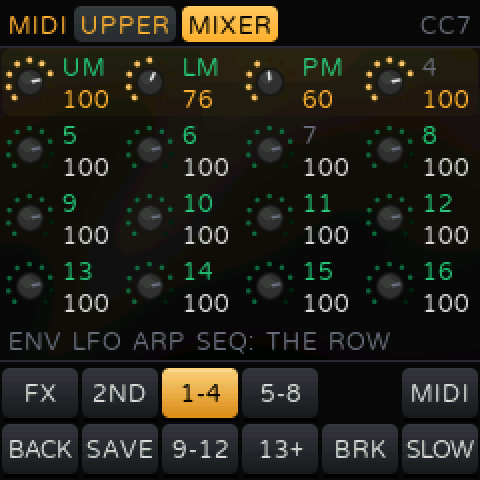
On the drawbars, press HOME: 16 knobs for the 16 MIDI channels, in four rows. Each sets the volume of its channel: turning it sends CC 7 (channel volume) on that channel, so it acts at once, also on notes that already sound.
ENVLFO / ARPSEQ choose the row (channels 1–4, 5–8, 9–12, 13–16), as the four buttons sit on the panel; they glow, the chosen one is lit. KNOB 1–KNOB 4 move its four channels. The channels the manuals send on are named UM, LM and PM (upper, lower, pedal manual); channels the zones play (out channels, clones, harmonic) are green. HOME again goes back.
The mixer belongs to the performance setup. Recalling a setup sends its volumes to the channels that setup plays (not to the others, so the volumes of instruments you don't use stay as they are). The zones' velocity (chapter 10) is separate: it sets how hard the notes are played, the mixer how loud the channel is.
The panel lights
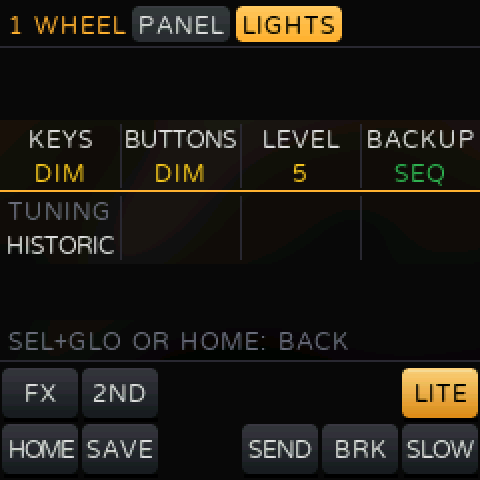
Hold SEL and press GLO. Without light the button labels of the FM-1 are hard to read; here you choose, separately for the 27 keys (KNOB 1) and the twelve buttons (KNOB 2):
OFF: only what matters lights, as before.
DIM: every key or button glows; what matters lights fully. KNOB 3 sets how bright the glow is: LEVEL 1 is a faint glow, 10 as bright as FULL (then what matters no longer stands out).
FULL: every key or button is lit; what matters blinks.
The octave buttons keep their own light. The lights are kept across power-off, not per setup. SEL + GLO again or HOME goes back.
BACKUP: SEQ sends all your settings to the computer over USB (see Backing up your settings in chapter 8).
5The sixteen instruments
Choose a model with ALGORITHM. The model sets the waveforms, what the drawbars are, the attack and release, the tuning, the character knob (SEL + KNOB 1 on the FX screen) and what the expression pedal does.
#
Model
Character
Character knob
Department I — Vintage & Combo organs (1–8)
1
Tonewheel OrganWHEEL
Near-pure sine tones mixed by the drawbars, key click, the bass and top octaves folding back as on the original. Jazz, gospel, soul and rock.
Percussion 2nd / 3rd, fast / slow
2
Brit ComboBRIT
The British transistor combo of the early sixties: hollow, slightly nasal, with a fine edge from the dividers.
—
3
Italo ComboITALO
The Italian combo: a bright sawtooth bite, present at once. Garage and psychedelic.
—
4
Tokyo ComboTOKYO
The Japanese stage organ of the seventies: rounder, with a slightly bell-like synthetic sheen. Pads with chorus and delay.
—
5
Osaka KingOSAKAnew
A small Japanese transistor combo: hollow and soft, a clarinet made of transistors that sits modestly in a band.
—
6
Il CastellanoCASTLnew
An Italian combo with more snarl, a built-in mixture on drawbar 9 and its own bass section on the pedal (its fourth stop lets the bass ring on for almost a second).
TONE: a filter from dull to bright
7
Dutch RockDUTCHnew
A Dutch valve organ: warm and throaty, through its own valve amplifier and a small speaker, from friendly to hard.
VALVE AMP: warm to hard
8
Playroom OrganPLAYnew
The toy chord organ of the seventies, the joker: plastic reeds blown by a little fan, every key a bit off. Full chords run out of wind and sag flat and softer; the motor flutters and hums.
FAN SPEED: a slow fan sounds low, late and tired
Department II — Pipe organs (9–12), each with its own stops
9
Baroque OrganBAROQ
North German, around 1690. Clear and transparent, every voice of a fugue audible; fast speech with chiff. Werckmeister III tuning; the wind breathes under full chords.
CHIFF
10
Cathedral OrganCATH
French symphonic, around 1870. Grand and orchestral: harmonic flute, gambe and voix céleste, bright French reeds, a steady wind, and the expression pedal as the swell box.
CHIFF
11
Renaissance OrganRENAInew
Italian, around 1550. Soft, silvery principals on low wind, the ripieno built rank by rank, a voce umana that beats like a singing voice. Quarter-comma meantone.
CHIFF (barely any by nature)
12
Romantic OrganROMANnew
German late romantic, around 1900. Dark, warm foundation stops that melt, soft strings, an oboe; the expression pedal is the crescendo roller.
ACTION: the pneumatic delay, 10–40 ms
Department III — Free reeds (13–16)
13
Paris MusetteMUSET
The French musette accordion: three 8' reeds, one tuned up and one down, a wet sweet beating. Bal-musette and café.
DETUNE: the beating, narrower to wider
14
Tango BandoneonBANDO
The bandoneon of the tango: tuned dry, dark and urgent; the bellows make it brighter, not only louder.
DETUNE
15
Trossingen BassTROSSnew
The German accordion: a clearer, sharper reed, tuned dry; the pedal is the bass side, bass stops from 16' to 2'.
DETUNE
16
SteirischeSTEIRnew
The Alpine button accordion: bright and wet, the beating wide; helicon basses on the pedal like a brass band.
DETUNE
The character knob is SEL + KNOB 1 on the FX screen. On the tonewheel it is the percussion; the other vintage models without their own knob show PERC (WHEEL ONLY).
Tuning
Three models play in a tuning of their own: the baroque organ in Werckmeister III (the near keys calm, the far ones harsher), the renaissance organ in quarter-comma meantone (pure thirds in C, F, G, D and B flat; the far keys howl), and the Playroom with every key a few cents off, as its plastic reeds are. TUNING on the lights page (SEL + GLO, then SEL + KNOB 1) sets EQUAL for all of them, or back to HISTORIC. Pipes and reeds also carry a small fixed detune per key; the vintage organs are exactly in tune, as dividers and tonewheels are.
The expression pedal per model
The FM-1 has no pedal socket: CC 11 from an expression pedal on an external keyboard or controller (on a zone's channel, chapter 10) does one of these, depending on the model:
Model
Expression (CC 11)
Vintage, Baroque, Renaissance
The volume
Cathedral
The swell box of the Récit: closed up to 20 dB softer and darker, open full and bright. Without a pedal the box is open
Romantic
The crescendo roller and the swell box together: it adds stops to the ones drawn, from the softest strings to the full organ, and opens the box. Without a pedal the roller is off: only what is drawn sounds
PITCH: bends the pitch, ±2 semitones. ROTARY: up = rotary fast while held, down = tutti boost
Same as vintage
Bends the pitch
PITCH and ROTARY are the BEND setting on the zone screen (SEL + KNOB 4, chapter 10); it counts for every zone.
The effects belong to the manuals, not to the model: changing the model keeps drive, vibrato, rotary and sends as they are; a performance setup stores them. The drawbars stay where they are too; turn PRESETS to pick a registration (chapter 8). Setups made with OrGigs 1.x keep their models: the models are stored under their own numbers, whatever their place in the list.
6Drawbars and stops
Each manual has nine drawbars (0 = off, 8 = full). What they are depends on the model: the vintage organs share the tonewheel footages, every pipe organ has its own nine stops, the free reeds share their reed ranks. When you move one, the screen names it, for example Oktave 4' 6.
Vintage and free reeds
DB
Vintage & Combo
Free reed
1
16'
Bassoon 16'
2
5 1/3'
Sub-fifth 5 1/3'
3
8'
Clarinet 8'
4
4'
Violin 8' (tuned up)
5
2 2/3'
Musette 8' (tuned down)
6
2'
Piccolo 4'
7
1 3/5'
Bandoneon 4' (detuned)
8
1 1/3'
Sheen 2 2/3' + 2'
9
1' (Il Castellano: Mixture IV)
Valve & air noise
The pipe organs' stops
DB
9 Baroque
10 Cathedral
11 Renaissance
12 Romantic
1
Quintadena 16'
Bourdon 16'
Principale 8'
Bourdon 16'
2
Prinzipal 8'
Montre 8'
Voce umana 8' (from c')
Prinzipal 8'
3
Rohrflöte 8'
Flûte harmonique 8'
Ottava 4'
Gedackt 8'
4
Oktave 4'
Gambe 8'
Flauto in VIII 4'
Salicional 8'
5
Oktave 2'
Voix céleste 8'
Flauto in XII 2 2/3'
Aeoline 8'
6
Sesquialtera II
Prestant 4'
XV 2'
Oktave 4'
7
Mixtur IV
Plein-jeu IV
XIX 1 1/3'
Fugara 4'
8
Regal 8'
Trompette 8'
XXII 1'
Mixtur III
9
Trompete 8'
Clairon 4'
XXVI + XXIX
Oboe 8'
The mixtures repeat at the top, as real ones do, so the full organ never gets shrill. Gambe and voix céleste beat against each other; salicional and aeoline melt into one soft string sound. The renaissance organ has no mixture block: its ripieno is a pyramid of single principal ranks, one drawbar each.
Which drawbars the knobs hold
Button
Top bar
KNOB 1 – KNOB 4
ENV
DB1-4
Drawbars 1, 2, 3, 4
LFO
DB5-8
Drawbars 5, 6, 7, 8
EDIT
DB9
Drawbars 1, 3, 4 (16', 8', 4': the foundation) and 9 (1')
The lit button shows the group. Pressing it again changes nothing, so you always know where you are.
The pedal
When the manual is PEDAL, KNOB 1–KNOB 4, whichever group is chosen, are its four stops. Most models have the standard set; the ones with a pedal of their own show its names:
Model
Stop 1
Stop 2
Stop 3
Stop 4
Standard (vintage, Musette, Bandoneon)
Sub 32'
Bourdon 16'
Octave 8'
Posaune 16'
Il Castellano
Bass 16'
Bass 8'
Bass 4'
Sustain (the bass rings on)
Baroque
Prinzipal 16'
Subbass 16'
Oktave 8'
Posaune 16'
Cathedral
Soubasse 32'
Contrebasse 16'
Flûte 8'
Bombarde 16'
Renaissance
Contrabassi 16'
Principale 16'
Ottava 8'
XV 4'
Romantic
Subbass 16'
Violon 16'
Oktavbass 8'
Posaune 16'
Trossingen Bass
Bass 16'
Bass 8'
Bass 4'
Bass 2'
Steirische
Helicon 16'
Helicon 8'
Bass 8'
Bass 4'
Chapter 8 lists the drawbar lists, a good set of classic registrations to start from.
7Manuals and coupler
OrGigs is a three-manual organ. From the FM-1's 27 keys you play the manual you choose; external keyboards play all three at once through the MIDI Zones.
The manual
Turn SELECT to choose UPPER, LOWER or PEDAL, on any screen. It decides:
which manual's drawbars the knobs edit and the screen shows,
which manual's place in the drawbar list PRESETS moves,
which manual's effects the drawbar strip and the FX screen's lit row show,
which zone the MIDI screens edit, and
which manual the FM-1's keys play (unless the keys are set to play by zone ranges, chapter 10).
Split and auto-pedal
The keyboard split of earlier versions is now part of the MIDI Zones: give each zone a key range, set the FM-1's keys to play BY ZONE RANGES, and switch on the AUTO-PEDAL to have the lowest note of the lower zone play the pedal. Chapter 10 shows how.
Coupler II/I
Press SEQ. The upper keys now also play the lower manual's registration, adding its drawbars to your upper sound. II/I appears under the drawbars.
Octave
OCT− and OCT+ shift the FM-1's keys from −2 to +3 octaves. The lights show when it's shifted. The generators cover C1 to B7, so all 84 notes are reachable.
Changing the manual first releases the notes held on the FM-1's keys, so no note is ever left hanging. Notes coming in over MIDI keep sounding.
8Drawbar presets and performance setups
Two kinds of memory: the drawbar list keeps registrations of one manual, performance setups keep the whole instrument.
The drawbar list
The vintage and free-reed models share one fixed list of registrations, sorted by department. Each pipe organ has its own list, made for its stops. Every list ends with the same 16 user slots. The pedal has one list for all models, with 8 user slots. An entry holds only the drawbars (the pedal's four stops), nothing else.
Recall: turn PRESETS. The screen shows the manual, the number and the name, for example UM 14 BRITISH HARD ROCK; the top bar shows the number (P14).
Where it starts: each model remembers per manual where in its list it was. The first time: vintage upper at Classic Jazz Lead, lower at Lower Manual Comping; free reed upper at Clarinet, lower at Bass Chords; Baroque Prinz 8' 4' / Rohrflöte 8'; Cathedral Fonds 8' / Voix céleste; Renaissance Principale / Princ + Flauto; Romantic Grundstimmen 8' / Gedackt + Aeoline (upper / lower).
Save: tap SAVE. On a user slot, the drawbars of the manual go into it; on a factory entry, into the first free user slot: DRAWBARS SAVED UM USER 1. When all user slots are taken, turn to the one to overwrite.
A star after the number in the top bar (P3*) means the drawbars differ from the entry shown.
The manuals' list
Numbers
Registrations
1–12 Vintage: jazz, soul, gospel
Classic Jazz Lead 888000000, Warm Jazz Comp 848000000, Lower Manual Comping 008400000, Hollow Funk 800000888, Memphis Soul 888800000, Whistle / Soul Solo 888000008, Gospel Shouting 668848588, Gospel Simmering 830000378, Real Gospel 800000678, Mellow R&B Ballad 803600000, Modern Jazz Solo 888400000, Big Band Punch 888888000
13–22 Vintage: rock, pop, reggae
Full Organ (All Out) 888888888, British Hard Rock 888800000, Baroque Rock Ballad 688600000, Latin Rock Groove 886400000, 60s Brit Soul 888880000, Heavy Biker Rock 888686868, Kingston Reggae Bubble 808000000, Psychedelic Space Pad 008642000, 70s Arena Rock 888888800, 60s Transistor Combo 004888642
Principale, Voce umana, Principale piano, Princ + Ottava, Princ + XV, Flauto in VIII, Princ + Flauto, Flauti, Princ + Flauti, Ripieno a 4, Ripieno, Tiratutti
Three wet 8' reeds with a little air, tremulant, a touch of delay, stage reverb
4
B3
Brit Combo
Brit Combo 8' 4' 2 2/3' 2', vibrato V2, rotary, a little delay
5
C4
Tonewheel Rock
Tonewheel Organ, all drawbars out, heavy drive, chorus, stage reverb
6
D4
Italo Combo
Italo Combo, bright, a short slapback delay
7
E4
Baroque
Baroque organ, principals 8' 4', flutes on the lower manual, hall
8
F4
Tango
Tango bandoneon, bassoon + clarinet, a light tremulant
9
G4
British Hard Rock
Tonewheel 888800000 hard into the tube, no vibrato, rotary
10
A4
Gospel
Tonewheel Gospel Shouting 668848588 over Lower Manual Comping, chorus
11
B4
Baroque Rock Ballad
Tonewheel 688600000, chorus, rotary, hall
12
C5
60s Transistor Combo
Brit Combo 004888642, vibrato V2, no rotary
13
D5
Reggae Bubble
Tonewheel 808000000, chorus C1, a delay on the upper manual
14
E5
Cathedral Trumpet
Plenum with Trompete over the accompaniment, pedal with Posaune, cathedral reverb
15
F5
Musette Master
All reeds of the musette, wide detune
16
G5
Psychedelic Space Pad
Tokyo Combo 008642000, chorus, rotary, a long delay into the hall
All 16 start with the standard MIDI Zones (upper on channel 1, lower on 2, pedal on 3, full key range, velocity through) and the mixer at 100.
What is kept after power-off
Everything: the instrument as you left it, the 16 setups, the user slots of the drawbar lists, the insert effect and the master, the panel lights and the MIDI rate.
OrGigs writes to its memory about 2 seconds after your last change, and only when nothing is sounding, because writing would interrupt the audio for a moment. Before switching off, take your hands off the keys for a couple of seconds.
Backing up your settings
Everything OrGigs keeps (the 16 setups, the instrument as you left it, the user drawbars, the lights, the insert effect and the master) fits into one small backup file, sent over the USB cable as MIDI SysEx. Keep one before you install another firmware: BoGigs, for example, uses the same memory and starts OrGigs from the factory settings afterwards. The FM-1 and the SMK-37 Elite read each other's backups.
On the computer, tools/orgigs_backup.py (Python with mido and python-rtmidi, as the installer) does it; close other programs that use the OrGigs MIDI port first.
Command
What it does
orgigs_backup.py --save my.syx
Fetches everything into my.syx
orgigs_backup.py --save s3.syx --setup 3
Fetches setup 3 alone
orgigs_backup.py --listen my.syx
Waits, then keeps what you send from the panel: SEL + GLO, then SEQ
orgigs_backup.py --load my.syx
Sends the backup to OrGigs: it replaces everything
orgigs_backup.py --load my.syx --setup 3 --to 7
Takes setup 3 out of a whole backup and loads it into setup 7; the rest stays
orgigs_backup.py --show my.syx
Tells what a file holds
A backup coming in never loads by itself. The screen asks LOAD BACKUP? SAVE: YES (or LOAD INTO SETUP 7?): SAVE loads it, any other button keeps everything as it is; after a minute without an answer nothing is loaded. Before it loads, OrGigs sends back everything as it was, and the tool keeps that as my-before-DATE.syx, so one --load of that file undoes it.
The files are plain SysEx: any SysEx program (MIDI-OX, SysEx Librarian, …) can receive and keep them, and send them back with about 50 ms between the messages. A damaged file, or one from another OrGigs settings version, is refused (BACKUP: DAMAGED / OTHER VERSION).
Updating from an earlier OrGigs. The eight setups of version 2 become setups 1–8 (their one effect chain goes to all three manuals; the pedal without vibrato); setups 9–16 start from the factory. Drawbar presets you stored in version 2 are not carried over: the list and its user slots start fresh. From the first version, the four registrations become setups 1–4.
9Effects and the FX screen
Press FX. The effects work like a mixing desk: every manual has its own channel strip, and all share the rotary, the delay and the reverb.
A row per manual: UM upper, LM lower, PM pedal. The lit row is the manual the knobs move; choose it with ENV, LFO, ARP (or SELECT). The L under the name lights when the manual goes through the rotary; SEQ switches it.
Vibrato & chorus (vintage) or tremulant (pipe, reed)
Delay feedback
KNOB 3
Delay send
Delay time, 20–1000 ms
KNOB 4
Reverb send
Reverb room
While SEL is held the screen shows the shared values. PLAY brake and REC slow/fast stay as always; FX or HOME go back to the drawbars.
The effects stay with the manuals when you change the model; a performance setup stores them (the insert effect and the master are not part of a setup: they stay as they are when you recall one). The sound passes through these stages, in this order:
each manual: body + drive ─▶ vibrato / chorus / tremulant ─▶ [insert effect] ─▶ rotary or past it
└─ sends ─▶ delay, reverb
all together: rotary ─▶ + delay + reverb ─▶ [master EQ ─▶ compressor] ─▶ expression ─▶ volume
1 · Body and drive (per manual)
Vintage & Combo: asymmetric tube overdrive into a speaker cabinet. More DRIVE gives more growl, especially with full drawbars.
Pipe: a clean limiter; DRIVE blends tube saturation in. The CHIFF (SEL + KNOB 1) is the breathy "spit" of a pipe as it starts speaking.
Free reed: the wooden cassotto chamber of an accordion, with brightness following the bellows; DRIVE blends tube saturation in. SEL + KNOB 1 sets the musette DETUNE C (in cents): wider is wetter.
2 · Vibrato, chorus and tremulant (per manual)
Vintage models have the classic scanner settings V1V2V3 (vibrato, increasing depth) and C1C2C3 (chorus, vibrato mixed with the dry sound). Pipe and reed models have a 4.8 Hz TREMULANT with adjustable depth instead. ARP on the drawbars switches it off and back on for the manual shown.
3 · Percussion (tonewheel only)
SEL + KNOB 1 on the FX screen: 2ND FAST, 2ND SLOW, 3RD FAST, 3RD SLOW or OFF. The percussion adds a decaying 4' (2nd) or 2 2/3' (3rd) on the upper manual. Fast decays in about 0.2 s, slow in about 1 s. It is single-trigger, like the original: it only sounds when all upper keys were released before the new note, so it disappears under legato.
4 · Rotary speaker (shared)
A horn and a drum turn against each other, each with its own inertia. The horn speeds up in about 0.8 s and the heavy drum in about 3 s, which gives the famous "ramp". The drum pumps the bass deeply as its baffle turns past the microphones, so the speed change is heard on dark registrations too. Each manual goes through it or past it, on every model: a cathedral organ through a rotary is possible.
Action
Result
REC
ROTARY SLOW ↔ ROTARY FAST
PLAY
ROTARY BRAKE: rotors coast to a stop. Press again for slow
SEQ on the FX screen, or SEL + REC
The manual through the rotary or past it: LM ROTARY OFF
MIDI CC 1
BEND PITCH (factory): low half = slow, high half = fast. BEND ROTARY: low = slow, middle = brake, high = fast
Pitch bend up
With BEND ROTARY: fast while held, back when released ("kick")
Pitch bend down
With BEND ROTARY: tutti boost while held, coupler on and about 2 dB louder (vintage and pipe models)
5 · Delay and reverb (shared, fed by the sends)
Each manual sends to a stereo ping-pong delay (20–1000 ms, with feedback) and to the reverb, each with its own amount: a dry pedal under a wet upper manual is two knobs. The sends are taken after the manual's vibrato, before the rotary. The four reverb rooms are:
Room
Character
SPRING
The spring tank of an organ amp: short and slightly "boingy"
STAGE
A small club or stage, 0.9 s
HALL
A concert hall, 2.8 s
CATHEDRAL
A stone church, 7.5 s with 45 ms pre-delay
6 · The insert effect (one manual): SEL + FX
Hold SEL and press FX: INSERT. One effect at a time, on one manual, after its vibrato and before its rotary. EDIT chooses the next effect (SEL + EDIT: the one before), SEQ switches it off and on again, ENV, LFO, ARP put it on the upper, lower or pedal manual. The row of seven shows which one is chosen.
KNOB 1–KNOB 4 are the effect's values 1–4, SEL + KNOB 1–KNOB 4 the values 5–8. Each effect keeps its own, also after power-off and while another effect is chosen. FX or HOME go back to the drawbars.
Effect
KNOB 1
KNOB 2
KNOB 3
KNOB 4
SEL + 1
SEL + 2
SEL + 3
SEL + 4
Chorus
Rate 0.10–5 Hz
Depth
Delay 3–25 ms
Mix
Width
Feedback
Wah-wah
Pedal
Low 200–800 Hz
High 1–4 kHz
Resonance 1–10
Mix
Level
Auto-wah
Sensitivity
LFO rate (0 = off)
Low
High
Resonance
Decay 20–2000 ms
Mix
Level
Flanger
Rate
Depth
Delay 0.5–5 ms
Feedback ±90 %
Mix
Width
Phaser
Rate
Low 100–1000 Hz
High 1–6 kHz
Stages 2–8
Feedback ±90 %
Mix
Width
Ring mod
Frequency 20–2000 Hz
Mix
LFO rate (0 = off)
LFO depth
Width
Amp
Model
Gain
Tone ±10
Cabinet
Level
Mix
Chorus: a lush stereo chorus, kept at the level of the dry sound. Feedback makes it richer.
Wah-wah: while it is chosen, MIDI CC 1 is the wah pedal (the mod wheel of a keyboard on the USB, or the simulator's mod strip), not the rotary switch; KNOB 1 sets the pedal too. Low and High set the travel of the pedal, Resonance how vocal it is.
Auto-wah: the wah follows how loud you play: chords open it, and it closes with the Decay. Sensitivity sets how far it opens. With an LFO rate above 0 it also sweeps by itself.
Flanger: the jet sweep. Negative feedback sounds hollow, positive metallic.
Phaser: notches sweeping between Low and High; more stages, more notches.
Ring mod: the sound multiplied with a sine: bells and robots. Small frequencies turn into a tremolo. The LFO wobbles the frequency.
Amp: a guitar amp for the organ. Models CLEAN, CRUNCH, LEAD (two stages) and FUZZ; Tone tilts dark to bright; Cabinet OFF, 1X12, 2X12, 4X12. The level holds when you turn up the gain.
Mix is the share of the effect (100 % = only the effect), Width how far it spreads in stereo, Level the effect's loudness. Rates are in Hz.
7 · The master: EQ and compressor (the whole sound)
On the INSERT screen, SEL + FX once more: MASTER. A three-band EQ and a compressor on the whole sound, after the delay and the reverb, before the expression and the volume. ENV switches the EQ, LFO the compressor (lit: on). The bar shows how many dB the compressor takes off right now (-13.5dB). EDIT chooses what the knobs hold. Both are kept for all setups.
Knob
EQ
Compressor (after EDIT)
KNOB 1
Low, ±12 dB
Threshold, −40–0 dB
KNOB 2
Mid, ±12 dB
Ratio, 1:1–20:1
KNOB 3
High, ±12 dB
Attack, 1–100 ms
KNOB 4
—
Release, 20–1000 ms
SEL + KNOB 1
Low frequency, 50–400 Hz
Make-up gain, 0–12 dB
SEL + KNOB 2
Mid frequency, 200–5000 Hz
—
SEL + KNOB 3
High frequency, 2–12 kHz
—
Processor load. The effects only cost time while they are on. Press SEL to see the load (DSP 10%) with your heaviest registration; it should stay well below 100.
10MIDI Zones
The FM-1 connects over USB as a MIDI device. Three MIDI Zones, one for each manual, take the notes that come in, play them on the organ and send them on to your synths: OrGigs is a MIDI router and mapper as much as an organ.
What a zone does
Each zone belongs to one manual: upper, lower, pedal. A zone
listens to its MIDI-in channel (factory: 1 upper, 2 lower, 3 pedal),
takes only the notes in its key range, lowest to highest key. Zones may overlap: a note in two ranges plays both manuals, so you don't need a split,
plays them on its manual inside (unless its internal sound is off),
sends them out on its MIDI-out channel, transposed and shifted by octaves if you like, with the velocity they came with or a fixed one,
and, switched on per zone, passes them through three modules: chord memory (one note plays a chord), the cloner (the notes also go out on more channels, each with its own octave) and the harmonic mapper (nine channels, one per drawbar footage).
CC, aftertouch and program changes go out on the zone's channels too, unless you filter them. Pitch bend always does. A sustain pedal (CC 64) holds the notes that came in on its channel, on the organ and on the out channels, until you lift it.
The organ's own sound is never velocity-sensitive. Transpose and octave shift the MIDI output only; the organ plays the note you play.
The FM-1 has one USB port for MIDI in and out. A MIDI host routes the keyboard into the FM-1 and the FM-1's output on to your synths. Use TRS-SAFE when the far end is a 5-pin DIN cable.
Avoid loops. Don't route the FM-1's output back into the FM-1 (in the MIDI host, or with "MIDI thru" in a DAW): every note would come back and go out again, without end.
The five screens
Press GLO: the zone screen. Each further press of GLO goes to the next screen: ZONE → CLONE → HARMONIC → CHORD → YST → ZONE. HOME goes back to the drawbars, FX to the effects. On every screen but YST SELECT chooses the zone you edit: UPPER, LOWER, PEDAL.
ENVLFOEDITARPSEQ are the screen's switches; the button map at the bottom of the screen names them and lights the ones that are on. PLAY and REC stay the rotary.
ZONE: channels, range, transpose, velocity
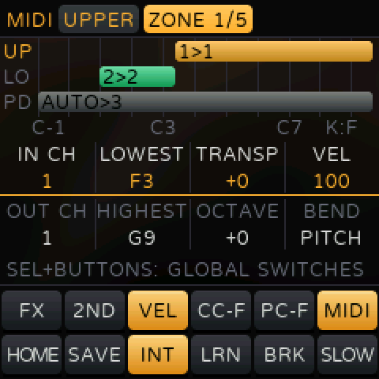
The bars show the key range of each zone over the whole MIDI range (C-1 to G9), with its in and out channels (1>1). The zone you edit is amber. Here the lower zone takes C1–E3 and the upper zone F3 and up: a split for an external keyboard. The pedal is played by the auto-pedal.
Knob
Turn
SEL + turn
KNOB 1
MIDI-in channel 1–16, OFF
MIDI-out channel 1–16, OFF
KNOB 2
Lowest key
Highest key
KNOB 3
Transpose, ±24 semitones
Octave of the MIDI out, ±3
OCT−OCT+
(the FM-1's keys)
The ORGAN OCTAVE, ±3
KNOB 4
Fixed velocity 1–127
BEND, for all zones: what pitch bend and CC 1 do on the organs. PITCH (factory): bend ±2 semitones, CC 1 rotary slow/fast. ROTARY: bend up = rotary kick, down = tutti; CC 1 slow/brake/fast. The reed models always bend, and CC 1 is their bellows
Two octaves.OCTAVE shifts only what the zone sends out. The ORGAN OCTAVE (SEL + OCT− / OCT+ on this screen) shifts what the zone plays on the organ inside, for example the lower manual an octave down. When it is set, the cell reads OCT/ORG, the two values side by side. Each zone has its own, and a setup stores it.
Button
Switch
SEL + button (for all zones, except EXPR)
ENV
VEL Velocity through: the velocity of the incoming note goes out. Off: the fixed velocity
EXPR Velocity × expression: scaled by CC 11 / the bellows
LFO
CC-F Filter CC and aftertouch: they're not sent on
THRU Channels no zone listens to pass through unchanged (with clock and start/stop)
EDIT
PC-F Filter program changes
USB/TRS MIDI rate: USB-FAST or TRS-SAFE
ARP
INT Internal sound of the zone on/off. Off: the zone only sends MIDI
K:FL/K:ZN The FM-1's keys: follow the manual, or play by zone ranges
SEQ
LRN Learn the range: play the lowest and the highest key (on the FM-1 or on the zone's channel)
AUTO Auto-pedal: the pedal zone plays the lowest note held in the lower zone (within the pedal zone's range)
PLAY
(the rotary brake)
SUS Sustain in holds the keys: a sustain pedal coming in on the zone's channel (CC 64, e.g. the pedal on a keyboard connected to the FM-1) also holds the FM-1's own keys, inside and on MIDI out. Off by default
Leaving the out channel at OFF makes a zone internal only; switching INT off makes it MIDI only. Notes on a channel no zone listens to are dropped, unless THRU is on.
CLONE: more channels
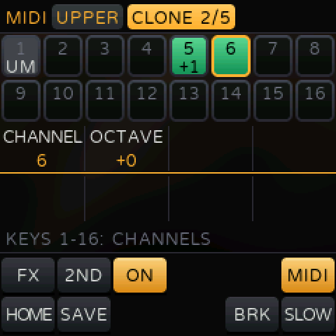
ENV switches the cloner of the zone on and off. Keys 1–16 (F3 to G#4) switch channels 1–16; the zone's notes go out on each of them as well as on its own out channel, marked with the manual's name (UM, LM, PM, as in the mixer). KNOB 1 chooses a channel, KNOB 2 its octave (±3); pressing a key also chooses it. Here the upper zone also plays channel 5 an octave up and channel 6.
HARMONIC: nine channels, one per drawbar
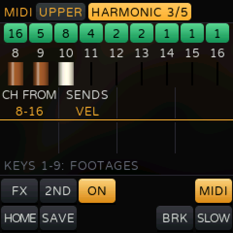
Turns the zone's drawbars into a MIDI additive synth. ENV switches it on. Nine channels, from the one set with KNOB 1, each get the note transposed to their drawbar's footage. Keys 1–9 switch the footages. KNOB 2: the drawbar sets each note's velocity (VEL), or moving a drawbar sends that channel's volume (CC7/CC11), so the mix changes while notes hold. Only footages that are switched on and whose drawbar is above 0 sound. Not for the pedal zone.
Footage
16'
5 1/3'
8'
4'
2 2/3'
2'
1 3/5'
1 1/3'
1'
Semitones
−12
+7
0
+12
+19
+24
+28
+31
+36
CHORD: one key, one chord
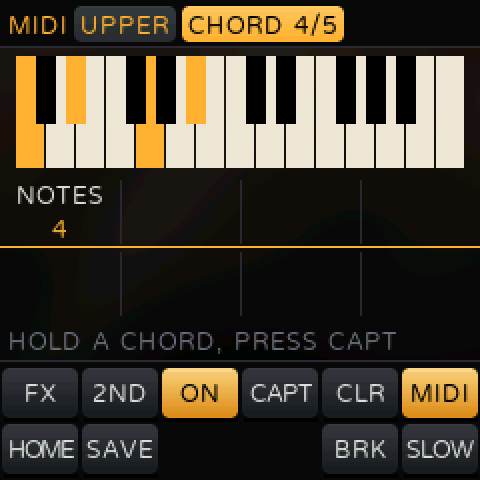
Hold a chord of up to eight notes (on the FM-1 or on the zone's channel) and press LFO (CAPT): CHORD NOTES 4. With ENV on, every single note then plays that chord shape from its own root, on the organ and on all the zone's channels. EDIT (CLR) clears it. The keyboard shows the chord over its lowest note; here C minor 7.
YST: the Yamaha SEQTRAK
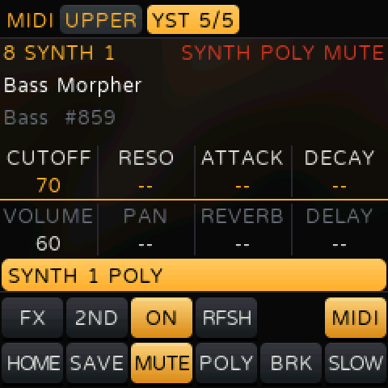
Connect a SEQTRAK with a USB-C cable: it is the host, the FM-1 its keyboard. YST is off from the factory; ENV switches it on (the setup keeps it, as the other modules). Then OrGigs asks the SEQTRAK what its 11 tracks hold (SEQTRAK CONNECTED, TRACKS READ), and again whenever the cable is plugged in. After loading another project on the SEQTRAK, press LFO (RFSH) to read it again. In between OrGigs asks nothing, but it follows what the SEQTRAK sends when you play it: its sounds, its knobs, a drum track turned into a synth track (OS 2.0). The tracks sit on channels 1–11: KCK SNR CLP HH1 HH2 PC1 PC2 (drums), SY1 SY2, DX, SMP (sampler); the clone grid, the mixer and the zone screen show these names.
SELECT chooses the track, and the zone you edit (the manual) now plays it: its MIDI out channel follows. Whether the organ sounds along is the zone's INT switch. PRESETS steps through the sounds the track can load (the drum, synth, DX or sampler list, 2424 in all, by name). KNOB 1–4: cutoff, resonance, attack, decay; SEL + KNOB 1–4: volume, pan, reverb and delay send. ARP mutes the track, SEQ switches a synth or DX track between mono, poly and chord. A value shows -- until it has been turned once, here or on the SEQTRAK.
While the SEQTRAK is connected, everything it sends on channels 1–11 (its knobs, sound changes, the notes of its keys and patterns) and its clock belong to YST: none of it plays the organ or goes back out. The zones listen on channels 1–3 from the factory, and they would send the SEQTRAK's own notes straight back to it, doubled notes that hang.
If the SEQTRAK does not answer, the screen says so and counts the questions that could not be sent and those that got no answer; LFO tries again. Close the SEQTRAK app (Bluetooth) while you play it from OrGigs: the SEQTRAK may answer the app instead. OrGigs never waits for the SEQTRAK: whatever it does, the keys and the organ keep playing.
The FM-1's own keys
By default (K:FL, follow) the FM-1's keys play the zone of the manual chosen with SELECT, ignoring its range, and go out on its channels like any note. Set SEL + ARP to K:ZN and they play by the zone ranges instead, like an external keyboard. The keys have no velocity: they always send the zone's fixed velocity (scaled by expression with EXPR).
Example: a split with bass on the FM-1
On the zone screen, choose LOWER with SELECT, press SEQ (LRN) and play F3 and B3.
Choose UPPER, learn C4 and G5.
SEL + ARP: K:ZN, and SEL + SEQ: AUTO. The left hand plays the lower manual and its lowest note the pedal.
Hold SAVE and press a setup key to keep it.
MIDI in: what else comes in
Message
Effect
CC 12–20
Drawbars 1–9 of the zone's manual (0–127 → 0–8); pedal: CC 12–15
CC 1
Mod strip: rotary slow / fast (BEND ROTARY: slow / brake / fast), or the bellows on the reed models
CC 11
Expression (volume swell)
Pitch bend
Pitch strip: bends the pitch ±2 semitones (organs with BEND ROTARY: rotary kick / tutti)
CC 64
Sustain: the notes of that channel keep sounding until the pedal lifts
CC 120 / 123, 121
All notes off on that channel; 121 (reset controllers) lifts the sustain
Each is also sent on to the zone's channels (CC unless filtered). A nine-fader MIDI controller on CC 12–20 makes a real set of drawbars.
MIDI rate
SEL + EDIT on the zone screen chooses USB-FAST (normal) or TRS-SAFE. Choose TRS-SAFE when the FM-1's output reaches a 5-pin DIN cable through a MIDI host: messages are then paced to what the cable can carry, so nothing is lost in big chords or with the cloner.
11Installing, updating, going back
OrGigs is installed over USB from a web page, the OrGigs installer: the Install button on OrGigs's card on The Firmware Hub (thefirmwarehub.com) leads there. It runs in Chrome, Edge or Firefox on a computer; nothing else needs to be installed.
Install or update
Connect the FM-1 with a USB data cable (not a charge-only cable). Close other programs that use its MIDI port (DAWs, other browser tabs with Web MIDI).
Open the installer and press Install. Allow MIDI access, with SysEx, when the browser asks.
The page finds the FM-1, picks its package and checks it, switches the FM-1 to update mode, writes the firmware and restarts it. It ends with Done. OrGigs is installed.
Your setups and presets are kept; when a new version changes their format, it takes over what it can (chapter 8). Coming from another firmware, OrGigs starts with its factory settings. If the page finds an older M-VAVE firmware or another model, it says so and writes nothing.
During installation don't unplug the FM-1. If the write is cut off anyway, plug it in again and press Install: it goes on where it stopped.
Without a browser
OrGigs's source also has an installer script, tools/fm1_install.py (Python 3.12 with mido and python-rtmidi). In the source folder, py -3.12 tools\fm1_install.py --info only reads and shows the running firmware, for example FM-1_674150 [running]; py -3.12 tools\fm1_install.py orgigs-1.5.fwsc installs a package.
Going back to the original firmware
Use The Firmware Hub at thefirmwarehub.com to install the factory firmware (or any other) again.
If the FM-1 doesn't start normally, hold OCT− while switching it on. It starts in USB rescue mode, ready for the installer or the Firmware Hub.
Installing custom firmware is at your own risk.
12The browser simulator
The same OrGigs code also runs in Chrome or Edge, with the FM-1 panel drawn on screen. Use it to explore sounds or prepare setups without the hardware.
cd ~/orgigs/orgigs-fm1
sim/serve.sh # then open http://localhost:8099
Click Start audio, then play with the mouse or the computer keyboard (Z…/ and Q…U, piano layout). Shift is SEL.
Turn knobs with the mouse wheel or by dragging.
The two touch strips are drawn as sliders.
Enable Web MIDI to play from a MIDI keyboard and to send the zones' output to a synth or DAW. The log shows every outgoing message.
Setups and presets made in the simulator stay in the simulator; they aren't transferred to the FM-1.
13Specifications and limits
Item
Value
Tone generation
84 free-running generators, C1–B7; full polyphony, no voice stealing
Waveforms
20 wavetables, each in 4 band-limited versions (no aliasing up to B7)
Models
16, in 3 departments: 8 vintage & combo, 4 pipe organs, 4 free reeds; historic tunings (Werckmeister III, quarter-comma meantone) or equal
Manuals
Upper 9 drawbars, Lower 9 drawbars, Pedal 4 stops
Keyboard
27 keys (F3–G5), octave −2…+3
Effects
Per manual: drive / limiter / cassotto, scanner vibrato & chorus or tremulant, rotary on/off, delay and reverb sends. Shared: percussion, two-rotor rotary, stereo delay up to 1 s, 4 reverbs up to 7.5 s. Insert: chorus, wah-wah, auto-wah, flanger, phaser, ring modulator, amp. Master: 3-band EQ, compressor
Audio
44.1 kHz stereo, 256-sample blocks (5.8 ms)
Memory
16 performance setups; a drawbar list of 75 registrations, the pipe organs' own lists of 12–16, 16 user slots, a pedal list of 24 + 8; kept across power-off
MIDI mixer
16 channel volumes (CC 7), per setup
MIDI
USB MIDI in and out; 3 zones with channel, range, transpose, velocity, filters; cloner, 9-channel harmonic mapper, chord memory per zone; up to 48 incoming notes held at once
Firmware package
FM-1_674150
Known limits
Touch strips aren't read by this firmware. Use MIDI CC 1 and pitch bend from an external controller instead.
MIDI in and out are USB only, over the one USB port. The FM-1 platform has no TRS-MIDI output and no Bluetooth MIDI. For DIN gear use a MIDI host with TRS-SAFE.
The FM-1's keys aren't velocity sensitive. They send the zone's fixed velocity; notes coming in keep theirs.
AMIDI implementation chart
Function
Received
Transmitted
Channels
Each zone's in channel (factory 1 upper, 2 lower, 3 pedal); others dropped or passed through (THRU)
Each zone's out channel, plus its clone and harmonic channels
Note on / off
Yes, within each zone's key range
Yes. Note-off as note-on velocity 0 in TRS-SAFE
Velocity
Passed on (organ sound ignores it)
Through, fixed 1–127, or scaled by expression; per drawbar in the harmonic mapper
Pitch bend
Bend ±2 semitones, or rotary kick / tutti (BEND ROTARY)
Passed on to the zone's channels
CC 1 Modulation
Rotary speed / bellows
Passed on unless filtered
CC 7 Volume
—
Harmonic mapper with CC7; passed on unless filtered
CC 11 Expression
Expression
Harmonic mapper with CC11; passed on unless filtered
CC 12–20
Drawbars 1–9 of the zone's manual (pedal: CC 12–15)
Passed on unless filtered
CC 64 / 120 / 121 / 123
64: sustain. 120, 123: all notes off on that channel. 121: sustain lifted
Passed on; on all 16 channels at panic (SEL + HOME)
Aftertouch
—
Passed on unless CC is filtered
Program change
—
Passed on unless filtered
Clock, start, stop
—
Passed on with THRU
Running status
Yes
In TRS-SAFE
BTroubleshooting
Problem
Solution
No sound
Turn up MASTER. Check that some drawbars of the manual you're playing are above 0. In the clone and harmonic screens the keys are switches; press HOME. On the zone screen check INT (lit = the zone sounds). Is the master compressor's make-up or the EQ far off?
An external keyboard plays nothing
Check the zone's in channel and key range on the zone screen, and that the MIDI host routes the keyboard to the FM-1.
Some keys of the external keyboard are silent
They're outside the zone's range. Widen it with KNOB 2 / SEL + KNOB 2 or learn it (LRN).
The sound is very different from before
Another setup, model or drawbar preset is active. Check the top bar; hold SEL to see which setup key is lit. The insert effect and the master are not part of a setup: check them with SEL + FX.
CC 1 doesn't switch the rotary
The insert effect is WAH-WAH: CC 1 is its pedal. Choose another effect or switch it off (SEL + FX, then SEQ).
No percussion
Percussion only works on the Tonewheel Organ model, on the upper manual, and only on detached (non-legato) playing.
No rotary effect
Pipe and reed models bypass the rotary. Press SEL + REC to turn it on.
A synth receives nothing
Check the zone's out channel (not OFF) and the filters. In the harmonic mapper only footages that are switched on and whose drawbar is above 0 send.
Notes repeat without end, or the MIDI host's lights flicker
A MIDI loop: the FM-1's output is routed back into the FM-1. Remove that route in the MIDI host or DAW.
Notes missing on a DIN synth via a MIDI host
Set TRS-SAFE with SEL + EDIT on the zone screen.
Settings were lost after switching off
OrGigs saves 2 s after the last change, and only while nothing sounds. Release all keys for a moment before switching off.
The installer reports FM-1 not found
Use a USB data cable, close other programs that use the FM-1's MIDI port, and try again.
A note keeps sounding (stuck note)
Hold SEL and press HOME (PANIC ALL NOTES OFF). Everything stops at once, the reverb and delay tails included, and all 16 MIDI channels get all notes off.
Crackles under heavy playing
Press SEL to see the processor load (DSP 10%). If it is near 100, lower the reverb or rotary use, or play fewer manuals at full registration.